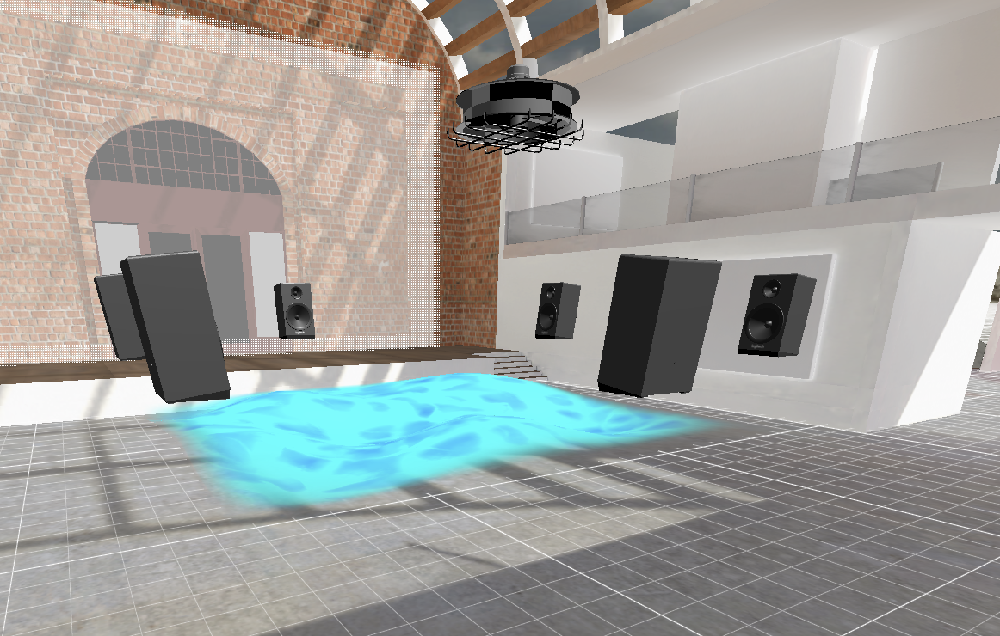

Medium - MaxMSP Patcher, Sound, Ocean Waves Data, Website, Resonator, Speakers, Water
Open Source Website in Chinese
https://closedbeta-inbetween.glitch.meGithub
https://github.com/Abbienew/In-BetweenDemo In Science Gallery Venice
https://youtu.be/yk_Qv6QqhXo《In Between》 is based on the work "Song of Sea Waves" , an art of marine project, for transfering of the causes behind the sea surface waves, taking data and models for creating a conversion of sea surface waves, creating an interactive installation for audience to understand the spatial-temporal information between sonification sound and sea surface waves
Latest Update
After desinging the 2d data sonification toolkit ( seen in my github ), I dived deeper into 3D sonification toolkit design. I seperated the data in Matlab. Then I made a mockup to simultate how ocean waves is caused via the viberation of sounds, turing into a installtion.
Mockup Photo
More information to be continued
Credits
Creator - ShangYunWu
Marine Science Consultant - Francesco Barbariol
Residency - Science Gallery Venice